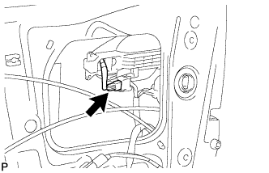
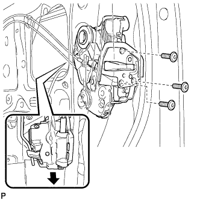

Door Electrical Key Oscillator (Installation Position Front Door) Removal |
| 1. Disconnect Battery Negative Terminal |
| 2. Remove Front Door Inside Handle Bezel RH |
 |
Using a screwdriver with its tip wrapped in protective tape, disengage the 3 claws and remove the front door inside handle bezel RH.
| 3. Remove Door Assist Grip Cover RH |
 |
Using a screwdriver with its tip wrapped in protective tape, disengage the 4 claws and remove the door assist grip cover RH.
| 4. Remove Front Door Trim Board Sub-assembly RH |
 |
Remove the 3 screws.
 |
Using a clip remover, disengage the 9 clips of the front door trim board RH.
Disengage the 4 claws and disconnect the front door trim board RH from the front door glass weatherstrip inner RH.
 |
Disengage the 2 claws and remove the front door trim board RH from the front door inside handle RH.
Disconnect the connectors.
| 5. Remove Front Door Inside Handle Sub-assembly RH |
 |
Disconnect the front door lock remote control cable RH and front door inside locking cable RH, and remove the front door inside handle RH.
| 6. Remove Front Door Glass Weatherstrip Inner RH |
 |
Remove the front door glass weatherstrip inner RH from the front door panel.
| 7. Remove Front Door Service Hole Cover RH |
 |
Disconnect the connector.
Remove the front door service hole cover RH.
| 8. Remove Front Door Glass Sub-assembly RH |
Connect the battery negative terminal and power window regulator master switch assembly, and move the front door glass RH to a position where the front door glass RH installation bolts are visible.
Disconnect the battery negative terminal and power window regulator master switch assembly.
 |
Remove the 2 bolts.
 |
Remove the front door glass RH in the order shown in the illustration.
| 9. Remove Front Door Glass Run RH |
 |
Remove the front door glass run RH.
| 10. Remove Front Door Frame Sub-assembly RR LWR RH |
 |
Remove the bolt.
Pull the front door frame RR LWR RH downward to remove it.
| 11. Remove Front Door Outside Handle Cover w/ Lock Cylinder Assembly |
 |
Remove the hole plug.
Using a torx socket wrench T30, remove the torx screw and remove the front door outside handle cover w/ lock cylinder assembly.
| 12. Remove Front Door Outside Handle Cover (Driver Side Door) |
 |
Using a screwdriver, disengage the 2 claws and remove the front door outside handle cover from the front door lock cylinder.
| 13. Remove Front Door Outside Handle Cover (Front Passenger Side Door) |
 |
Remove the hole plug.
Using a torx socket wrench T30, remove the torx screw and remove the front door outside handle cover.
| 14. Remove Front Door Outside Handle Assembly RH |
 |
Disconnect the front door outside handle assembly RH connector.
 |
Pull the front door outside handle assembly RH toward the rear of the vehicle to disengage it from the front outside handle frame RH.
Pull the front door outside handle assembly RH toward the outside of the vehicle and remove it from the front door outside handle frame RH.
| 15. Remove Front Door Outside Handle Pad FR |
 |
Disengage the 2 claws and remove the front door outside handle pad FR.
| 16. Remove Front Door Outside Handle Pad RR |
 |
Disengage the 2 claws and remove the front door outside handle pad RR.
| 17. Remove Front Door Lock Assembly RH |
 |
Using a torx socket wrench T30, remove the 3 torx screws.
Slide the front door lock assembly RH downward, pull out the front door lock open rod RH, and remove the front door lock assembly RH.
Remove the door lock wire harness seal from the front door lock assembly RH.
| 18. Remove Front Door Outside Handle Frame Sub-assembly RH |
 |
Using a torx socket wrench T30, remove the torx screw.
Pull it toward the front of the vehicle to disengage claw (A), and remove the front door outside handle frame RH.
Disengage claw (B).
Disconnect the connector.
| 19. Remove Door Electrical Key Oscillator (Installed in Front Door) |
 |
Remove the screw and remove the door electrical key oscillator.